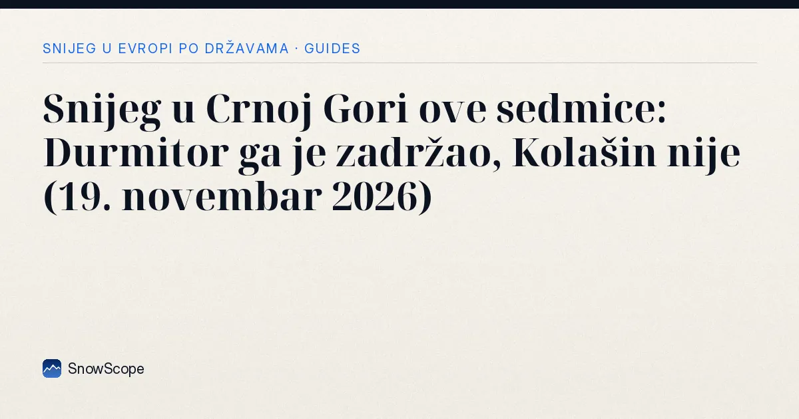

Snijeg u Crnoj Gori ove sedmice: Durmitor ga je zadržao, Kolašin nije (19. novembar 2026)
Dva crnogorska skijaška kraja imala su sasvim različitu sedmicu. Na Durmitoru su gornje staze Savinog Kuka iznad Žabljaka od 13. do 19. novembra skupile oko 22 cm novog snijega, u malim količinama gotovo svakog dana, i danas na tlu još imaju 6 cm. Na Bjelasici su Kolašin 1600 i Kolašin 1450 dobili tek nekoliko centimetara i u četvrtak 19. novembra oba su bez snijega.
Pogledajte prognozu snijega za Montenegro u aplikaciji SnowScopeVisina snijega, upozorenja i 3D karta, besplatno.
Durmitor: malo snijega, gotovo svaki dan
Savin Kuk, skijalište odmah iznad Žabljaka sa žičarama do 2175 m, ove sedmice nije imao veliku oluju, već niz malih. Gornje staze dobile su oko 5 cm u petak 13. novembra, 5 cm u subotu 14. novembra, 3 cm u nedjelju, 6 cm u ponedjeljak 16. novembra i 1 cm u utorak, a danas još oko 2 cm. Ukupno je to 22 cm za sedmicu.
Snijeg na tlu rastao je i opadao zajedno s tim. Prije sedam dana, 12. novembra, ostalo je 19 cm od ranijih padavina. Blago vrijeme ga je 13. novembra spustilo na 7 cm, a novi snijeg ga je do utorka 17. novembra ponovo podigao na 18 cm. Od tada se slegao: 11 cm u srijedu i 6 cm danas.

Bjelasica: Kolašin čeka
S druge strane kanjona Tare Bjelasica je uglavnom ostala izvan snijega. Kolašin 1600, sa žičarama do 2028 m, imao je 12. novembra 7 cm na gornjim stazama, a zatim samo 3 cm novog snijega u subotu 14. novembra. Pokrivač se smanjio s 4 cm 14. novembra na 2 cm 15. novembra i 1 cm u utorak 17. novembra, a od srijede 18. novembra staze su bez snijega.
Kolašin 1450, na južnoj strani iste planine sa žičarama do 1915 m, ove sedmice nikad nije imao više od 1 cm. Ni Lokve kod Berana nisu imale snijega. Grafikon ispod pokazuje razliku između dva kraja dan po dan.
Gradovi: zeleno s obje strane
Na nivou gradova Crna Gora je ove sedmice imala samo jedno bijelo jutro. Meteorološka stanica u Pljevljima, na 788 m na sjeveru, izmjerila je 4 cm snijega u subotu 14. novembra, koji je do nedjelje nestao. Nikšić, na 647 m, bio je bez snijega cijele sedmice, kao i Podgorica i primorje.
Žabljak leži na oko 1450 m, više od svih tih stanica, pa je tanak pokrivač u gradu danas moguć, ali bijelo na koje se može računati nalazi se na gornjim stazama Savinog Kuka.
Šta to znači za skijanje
Šest centimetara na Savinom Kuku je razglednica, a ne podloga za skijanje. Crnogorskim skijalištima treba dubok, slegnut pokrivač prije otvaranja žičara, a u normalnoj sezoni on dolazi u decembru. Ako planirate put, shvatite ovu sedmicu kao znak da Durmitor hvata rani snijeg i pratite službene kanale skijališta za vijesti o otvaranju.
Za planinare: visoke staze oko Žabljaka i Crnog jezera sada imaju mjestimičan snijeg i zaleđene sjenovite dionice. Iznad grada preporučuju se prave zimske cipele.
Sedmica pred nama
Naredni dani ostaju mirni. Petak 20. novembra je svuda suh. Subota 21. novembra mogla bi u najvišoj prognozi donijeti do 4 cm na vrh Kolašina, ali srednja prognoza ostaje suha. Ponedjeljak 23. novembra je najvjerovatniji snježni dan: Savin Kuk 1 do 3 cm, srednja prognoza 3 cm, a Kolašin 1600 od 1 do 4 cm, srednje 2 cm.
Četvrtak 26. novembra je nepoznanica: najviše prognoze daju 5 do 6 cm na obje planine, srednja ništa. Za cijelu sedmicu od 20. do 26. novembra srednja prognoza daje oko 4 cm na Savinom Kuku (4 do 7 cm) i na Kolašinu 1600 (2 do 10 cm), te oko 2 cm na Kolašinu 1450 (2 do 9 cm).
Kako stoji Crna Gora u regionu
U regionu je Crna Gora ove sedmice u sredini. Visoke slovenačke Alpe su jasno ispred, s novim snijegom danas. Hrvatska i Srbija imale su prošlog vikenda više snijega od Bjelasice, ali na nižim planinama, i otopio se za nekoliko dana. Bosna i Hercegovina, odmah preko granice od Durmitora, takođe je bez snijega i čeka ga krajem sljedeće sedmice.
Visina je prednost Durmitora: od svih skijaških planina Crne Gore, Srbije i Bosne i Hercegovine, on je jedna od rijetkih koja je danas još bijela.
Savjeti za skijaše
- Snijeg danas: oko 6 cm na gornjim stazama Savinog Kuka (Žabljak); Kolašin 1600 i 1450 su bez snijega.
- Najvjerovatniji snježni dan: ponedjeljak 23. novembra, nekoliko centimetara.
- Datume otvaranja pratite na službenim kanalima skijališta.
More maps (external sites)
About these numbers
Snijeg na stazama: gornje staze svakog skijališta na dnevnoj mapi snijega SnowScope. Izmjereni snijeg: meteorološke stanice, očitavanje u 7 sati po lokalnom vremenu. Snijeg koji dolazi: najniža, srednja i najviša prognoza za vrh staza svakog skijališta.
Cite this report
For research, teaching or the press: the numbers and charts are free to reuse under CC BY 4.0 with this citation.
SnowScope (2026), Snijeg u Crnoj Gori ove sedmice: Durmitor ga je zadržao, Kolašin nije (19. novembar 2026), https://snowscope.app/blog/cnr/2026/11/montenegro-snow-zabljak-durmitor-kolasin-19-november-2026.html, accessed 2026-11-19
SnowScope (Atlas Labs). (2026, November 19). Snijeg u Crnoj Gori ove sedmice: Durmitor ga je zadržao, Kolašin nije (19. novembar 2026). SnowScope snow reports. https://snowscope.app/blog/cnr/2026/11/montenegro-snow-zabljak-durmitor-kolasin-19-november-2026.html
BibTeX
@misc{snowscope2026montenegrosnowzabljakdur,
author = {{SnowScope (Atlas Labs)}},
title = {Snijeg u Crnoj Gori ove sedmice: Durmitor ga je zadržao, Kolašin nije (19. novembar 2026)},
year = {2026},
month = nov,
howpublished = {\url{https://snowscope.app/blog/cnr/2026/11/montenegro-snow-zabljak-durmitor-kolasin-19-november-2026.html}},
note = {Published 2026-11-19 17:29 UTC; accessed 2026-11-19}
}· CC BY 4.0 · Methods, data and tools →
Follow Montenegro
Besplatno: poruka kada dolazi novi snijeg i prognoza svako jutro.